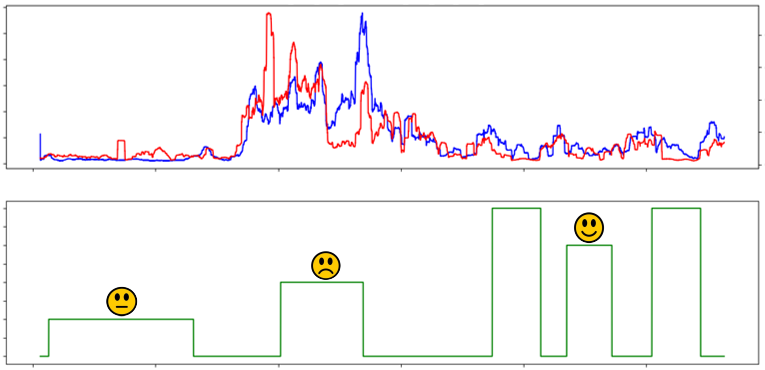

Affect recognition aims to detect a person's affective state based on observables, with the goal to e.g. improve human-computer interaction. Long-term stress is known to have severe implications on wellbeing, which call for continuous and automated stress monitoring systems. However, the affective computing community lacks commonly used standard datasets for wearable stress detection which a) provide multimodal high-quality data, and b) include multiple affective states. Therefore, we introduce WESAD, a new publicly available dataset for wearable stress and affect detection. This multimodal dataset features physiological and motion data, recorded from both a wrist- and a chest-worn device, of 15 subjects during a lab study. The following sensor modalities are included: blood volume pulse, electrocardiogram, electrodermal activity, electromyogram, respiration, body temperature, and three-axis acceleration. Moreover, the dataset bridges the gap between previous lab studies on stress and emotions, by containing three different affective states (neutral, stress, amusement). In addition, self-reports of the subjects, which were obtained using several established questionnaires, are contained in the dataset. Furthermore, a benchmark is created on the dataset, using well-known features and standard machine learning methods. Considering the three-class classification problem (baseline vs. stress vs. amusement), we achieved classification accuracies of up to 80%. In the binary case (stress vs. non-stress), accuracies of up to 93% were reached. Finally, we provide a detailed analysis and comparison of the two device locations (chest vs. wrist) as well as the different sensor modalities.
The original data as used in the paper can be downloaded via this link: ICMI'18 dataset (2.5 GB) Contained are the original physiological recordings (both from chest and wrist-worn devices), and the self-report data of the subjects.
Philip Schmidt, Attila Reiss, Robert Duerichen, Claus Marberger and Kristof Van Laerhoven, "Introducing WESAD, a multimodal dataset for Wearable Stress and Affect Detection", ICMI 2018, Boulder, USA, 2018
You may use this data for scientific, non-commercial purposes, provided that you give credit to the owners when publishing any work based on this data.